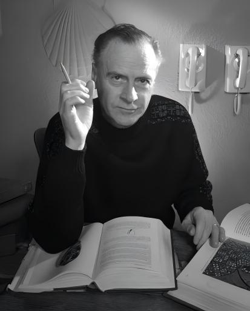
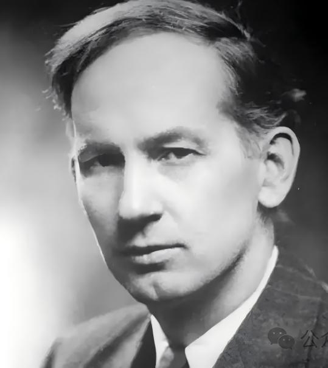
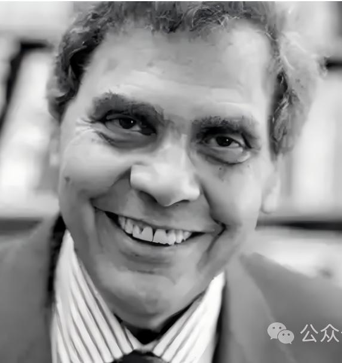
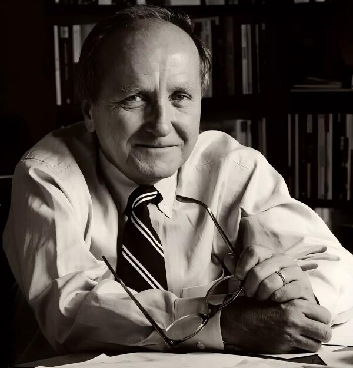

代表学者

麦克卢汉是加拿大文学批评家、媒介理论家，多伦多学派的核心人物。他原本研究英语文学，1951年出版《机械新娘》，分析广告的文化影响，已见媒介批判锋芒。1964年出版《理解媒介：论人的延伸》，一举成名，成为20世纪60年代最受大众关注的知识分子之一。 麦克卢汉的核心命题包括：第一，“媒介即讯息”——任何媒介的“讯息”是它引入人类事务的尺度、节奏和模式变化，而非其传递的具体内容。第二，“媒介是人的延伸”——轮子是脚的延伸，书籍是眼睛的延伸，电子媒介是中枢神经系统的延伸。第三，“地球村”——电子媒介将把世界重构为一个感官平衡的、部落化的整体。第四，“热媒介与冷媒介”——以信息清晰度和受众参与度为标准的媒介分类。 麦克卢汉的思想深受英尼斯媒介偏向论的影响，但他以更具煽动性的马赛克文风表达。他生前毁誉参半，学术界批评其技术决定论和缺乏严谨论证，但1980年去世后，随着互联网的崛起，他的思想全面复兴，被尊为“数字时代的先知”。 何道宽是麦克卢汉在华语世界最重要的翻译者和阐释者，其《媒介即文化：麦克卢汉媒介理论批评》（2000年）是国内研究的重要参考。

英尼斯是加拿大经济史学家、政治经济学家，多伦多学派先驱，媒介环境学派的思想奠基人。他早期的研究聚焦加拿大的皮货贸易、铁路和鳕鱼业，逐渐发展出对大宗商品（“大宗商品理论”）如何塑造加拿大经济的分析框架。这一经济史训练的独特视角，使他晚期转向传播媒介研究时，带有深厚的历史和地理眼光。 1950年出版《帝国与传播》，1951年出版《传播的偏向》。英尼斯提出媒介偏向论：传播媒介要么偏向时间，要么偏向空间。时间偏向媒介（如黏土板、石碑、羊皮纸）耐久但笨重，利于宗教帝国在时间中传承正统；空间偏向媒介（如纸张、莎草纸）轻便但易毁，利于政治帝国在空间中扩张控制。一个文明的兴衰，取决于其能否在时间偏向与空间偏向之间维持平衡。如果一种偏向过度主导，文明要么僵化在传统中，要么在扩张中碎裂。 英尼斯的思想深刻影响了麦克卢汉。麦克卢汉坦承：“英尼斯是第一个偶然发现，传播技术的变化是人们社会行为发生变化的终极原因的人。”何道宽翻译的《传播的偏向》和《帝国与传播》是国内标准读本。

波兹曼是美国媒介批评家、教育学家，纽约大学教授，媒介生态学的命名者和第三代代表人物。1968年，他在全美英语教师协会年会演讲中正式提出“媒介生态学”一词，将其定义为“将媒介作为环境的研究”。 波兹曼的媒介批判三部曲对公众产生了深远影响：1982年《童年的消逝》论证，童年是印刷文化的产物，电视通过打破信息隔离使童年“消逝”；1985年《娱乐至死》借赫胥黎“美丽新世界”的隐喻，警告电视将一切公共话语转变为娱乐的附庸，“我们毁于自己所爱的东西”；1992年《技术垄断》将人类文化史分为工具使用、技术统治和技术垄断三个阶段，批判技术在当代已经全面取代文化，成为所有合法性判断的最终标准。 波兹曼的思想深受麦克卢汉影响，但带有更明确的人文主义关怀和道德忧思。他并非全盘反对技术，而是呼吁警惕技术对文化的殖民。他在中国拥有极广泛的读者，章艳翻译的《娱乐至死》、何道宽翻译的《技术垄断》均为长销不衰的学术畅销书。

凯瑞是美国传播学者，曾任伊利诺伊大学传播学院院长，哥伦比亚大学新闻学院教授。他的核心贡献在于对传播研究文化转向的倡导，以及“传播的仪式观”的提出。 1975年，凯瑞发表《传播的文化研究取向》，系统区分了传播的两种观念：传递观（transmission view）——将传播视为信息在空间中的传送和控制，是美国经验研究的主导范式；仪式观（ritual view）——将传播视为共享文化的创造与社会在时间中的维系，传播“不是信息的位移，而是共同信仰的表征与再生产”。这一区分在1989年收入论文集《作为文化的传播》。 凯瑞深受杜威和芝加哥学派影响，同时批判性地吸收了英尼斯和麦克卢汉的媒介理论。他试图在美国经验研究的传统中打开人文主义的空间，使传播学回归对人类共同生活之意义的关切。丁未翻译的《作为文化的传播》（中国人民大学出版社，2019年）是国内标准读本。
核心理论
1.媒介即讯息
1964年，麦克卢汉在《理解媒介：论人的延伸》中提出了这一颠覆传播学传统认知的命题。命题的核心含义并非否认媒介内容的重要性，而是强调：任何媒介的“讯息”首先是该媒介技术本身对人类感知比率、思维方式和社会组织形式的根本性塑造——“我们塑造工具，然后工具重塑我们。”围绕这一核心，麦克卢汉展开了一系列延伸概念：“媒介是人的延伸”——轮子是脚的延伸，衣服是皮肤的延伸，书籍是眼睛的延伸，电子媒介则是中枢神经系统的延伸；“地球村”——电子媒介的即时性将世界重构为一个感官重新整合的、部落化的整体。何道宽2000年发表《媒介即文化》，是国内最系统的麦克卢汉理论阐释之一。技术决定论是最常见的批评标签，其马赛克式的文风也被传统学术界质疑缺乏严谨论证，但互联网和社交媒体的全面崛起使麦克卢汉的思想获得全面复兴，他被称为“数字时代的先知”。
2.媒介偏向论
1950年和1951年，加拿大经济史学家哈罗德·英尼斯先后出版《帝国与传播》和《传播的偏向》，从文明史的高度提出了媒介偏向论。英尼斯区分了两类具有不同物质特性的媒介：时间偏向媒介——如石碑、泥板、羊皮纸，耐久但笨重、难以运输，有利于宗教帝国在时间的长河中传承正统、维持知识垄断；空间偏向媒介——如纸张、莎草纸，轻便但不易长期保存，有利于政治帝国在空间中快速扩张行政控制与贸易网络。他认为，一个文明的兴衰安危，取决于其能否在时间偏向与空间偏向之间维持动态平衡；如果某种偏向过度主导，文明要么因僵化而停滞，要么因过度扩张而崩解。英尼斯被视为媒介环境学派的真正思想奠基人，其理论直接启发了麦克卢汉。批评者认为其历史叙事过于宏大、经验证据不够充分，偏向的二分法也过于简化，但其将传播媒介置于文明分析核心位置的眼光，开创了传播学最富哲学深度的理论传统。
3.技术垄断
1992年，波兹曼出版《技术垄断：文化向技术投降》，作为其媒介批判三部曲的终结篇，将批判推向更深的文明史维度。他将人类文化史划分为三个阶段：工具使用阶段——技术服务于文化，工具的地位是从属性的；技术统治阶段——技术开始挑战文化但尚未完全取代之，培根的科学主义是其思想标志；技术垄断阶段——技术全面取代文化，一切人类事务都必须经过技术的检验才能获得合法性，信息的泛滥淹没了智慧，手段吞噬了目的。在这一阶段，“看不见的技术”如统计、民意测验、标准化测试成为新的裁决神祇。波兹曼呼吁教育应成为抵抗技术垄断的最后堡垒，培养对技术的批判意识。何道宽的中译本在国内影响深远。批评者认为其与技术决定论的边界难以完全区分，提出的抵抗策略偏于保守和理想化，但技术垄断理论对当代算法决策、大数据崇拜和AI万能论的深度反思，在AI时代展现出令人警醒的前瞻性。
4.媒介情境论
1985年，约书亚·梅罗维茨出版《消失的地域》，创造性地融合了麦克卢汉的媒介理论与戈夫曼的拟剧理论。梅罗维茨的核心观点是：电子媒介通过打破物理空间与社会情境的传统绑定关系，重组了社会行为的信息系统。他将戈夫曼的“前台/后台”区分引入媒介分析——印刷媒介通过识字门槛将成人世界与儿童世界隔离开来，形成了不同的信息情境；电视则打破了这种隔离，将原本限于成人“后台”的秘密（性、暴力、权力运作的幕后逻辑）暴露给儿童，导致了波兹曼所说的“童年的消逝”。同样的逻辑也适用于性别：电子媒介使男性和女性的信息世界相互渗透，推动了性别角色规范的历史性变迁。“新的媒介产生新的情境，新的情境引发新的社会行为”成为媒介情境论的核心公式。单波在跨文化传播研究中从情境角度拓展了这一理论。批评者指出其对权力关系的分析不够深入，过多关注媒介形式而忽略了内容和制度因素，但梅罗维茨将媒介技术与日常互动行为理论相融合的思路，为媒介研究提供了独特的中观分析视角。
5.媒介四元律
麦克卢汉晚年与儿子埃里克·麦克卢汉共同提出了媒介四元律，作为分析任何媒介或人造物效应的通用探索工具，1988年以《媒介法则》为名出版。四元律包含四组互相映照的问题：这一媒介提升了什么（何种人类能力或感知被增强）？淘汰了什么（何种旧媒介或旧实践被取代或边缘化）？再现了什么（何种早已被淘汰的形式或体验被重新唤起）？逆转或翻转成了什么（当被推向潜能的极限后，它翻转成了什么相反的东西）？这一框架既可用于分析印刷机、电报等传统媒介，也可用于审视智能手机和算法推荐。批评者认为四元律过于概括，在具体分析时可能得出任意结论，且尚未经过严格的实证检验，但其作为启发式分析工具，在媒介素养教育中被广泛使用，为观察媒介演变提供了一种动态的、辩证的思维框架。
6.冷媒介与热媒介
1964年，麦克卢汉在《理解媒介》中提出了这一著名的、也是最具争议性的媒介分类。热媒介是“高清晰度”的，提供丰富、密集的感官数据，要求受众的参与度低、补充空间小——如照片（视觉信息高度清晰）、广播（听觉信息充满耳膜）、电影（沉浸式的大银幕体验）。冷媒介则是“低清晰度”的，提供的信息量较少、感官数据稀疏，要求受众高度参与、主动填补信息空白——如电话（只提供声音，需脑补对方表情和环境）、电视（低分辨率的马赛克光点图像）、漫画（简洁线条需读者脑补细节）。这一分类试图从感官参与度的角度区分媒介特性，引发了大量后续讨论。批评者几乎一致认为分类标准模糊、实际判断时容易产生矛盾——最经典的质疑就是“电视为何被归为冷媒介”——许多学者视其为麦克卢汉理论中最缺乏严谨性的部分，但这一分类的确成功激发了学界对媒介形式特征及其感官效应的持续关注和辩论。
7.媒介基础设施
媒介基础设施是支撑信息传播的重要物质基础，包括海底电缆、人造卫星、数据中心、通信网络等硬件设施，以及平台协议、技术标准等软性配置。从“自然即媒介”到“人体即媒介”，再到“媒介即基础设施”，显现了学界与业界对于媒介认知的观念与机制演变。媒介基础设施化基于技术架构、协议与标准、网络化关系三重结构要素，深刻影响着信息传播秩序与社会生活。在本土国际传播研究中，主流研究较多聚焦于文本、受众与效果，甚少关注国际传播的物质基底，实则内藏着一种“非物质性迷思”。媒介基础设施不仅作为研究对象被考察其物质构成与运行机制，更作为一种隐喻视角，探讨媒介如何如基础设施一般成为左右人与世界存在的座架。
8.数字极简主义
数字极简主义（Digital Minimalism）由乔治城大学计算机科学教授卡尔·纽波特（Cal Newport）在其2019年同名著作中系统提出。纽波特将极简主义定义为“知道多少才刚好的艺术”，数字极简主义则将这一理念应用于个人技术使用：审慎筛选少数数字工具，使其服务于个人的深层价值，而非被碎片化的数字刺激所奴役。其核心实践方法为“30天数字断舍离”——从非必需的电子工具中抽身三十天，以反思习惯并重新发现个人价值追求。从传播学视角看，数字极简主义是对“注意力经济”和“平台资本主义”的文化回应。在算法推荐和无限滚动的媒介生态中，用户的注意力被系统性地商品化，媒介使用的主动权被悄然让渡给平台的流量分配逻辑。数字极简主义主张以人的价值而非技术的便利性为决策标准，要求使用者主动审视每一项数字工具的成本收益，而非被动接受技术进化的叙事。纽波特通过大量真实案例（从阿米什农民到硅谷程序员）论证了这一理念的可行性。数字极简主义与“数字断联”“数字福祉”（Digital Well-being）等概念形成理论呼应，共同构成了数字时代用户主体性反思的重要维度。它并非鼓吹彻底拒绝技术，而是倡导一种更有意识、更有节制的技术使用方式。
- [1] [加]哈罗德·英尼斯 著，何道宽 译.帝国与传播[M].北京：中国人民大学出版社，2003.
- [2] [加]哈罗德·英尼斯 著，何道宽 译.传播的偏向[M].北京：中国大百科全书出版社，2021.
- [3] [加]马歇尔·麦克卢汉 著，何道宽 译.理解媒介：论人的延伸[M].南京：译林出版社，2019.
- [4] [美]尼尔·波兹曼 著，章艳 译.娱乐至死[M].北京：中信出版社，2015.
- [5] [美]尼尔·波兹曼 著，何道宽 译.技术垄断：文化向技术投降[M].北京：中信出版社，2019.
- [6] [美]约书亚·梅罗维茨 著，肖志军 译.消失的地域：电子媒介对社会行为的影响[M].北京：清华大学出版社，2002.
- [7] [美]沃尔特·翁 著，何道宽 译.口语文化与书面文化：语词的技术化[M].北京：北京大学出版社，2008.
- [8] [德]弗里德里希·基特勒 著，邢春丽 译.留声机 电影 打字机[M].上海：复旦大学出版社，2017.
- [1] 宋昭勋.新闻传播学中Convergence一词溯源及内涵[J].现代传播（中国传媒大学学报），2006（1）：51-53.
- [2] 何道宽.媒介即文化：麦克卢汉媒介理论批评[J].现代传播，2000（6）：12-17.
- [3] 陈力丹，毛良斌.媒介环境学理论范式：局限与突破[J].现代传播，2010（6）：23-27.
- [4] 胡翼青.论麦克卢汉传播观念的“技术乌托邦主义”——理解麦克卢汉的新视角[J].新闻与传播研究，2009，16（4）：12-19.
- [5] 胡翼青.显现的实体抑或意义的空间：反思传播学的媒介观[J].国际新闻界，2018，40（2）：30-36.
- [6] 刘海龙.传播中的身体问题与传播研究的未来[J].国际新闻界，2018，40（2）：37-46.
- [7] 孙凝翔，韩松.“可供性”：译名之辩与范式/概念之变[J].国际新闻界，2020，42（9）：122-141.
- [8] 胡翼青，王沐之.作为媒介性的可见性：对可见性问题的本体论探讨[J].新闻记者，2022（4）：8-19.
- [9] 胡翼青，张婧妍.“媒介世”：物质性语境下传播理论研究的演进[J].编辑之友，2022（4）：128-140.